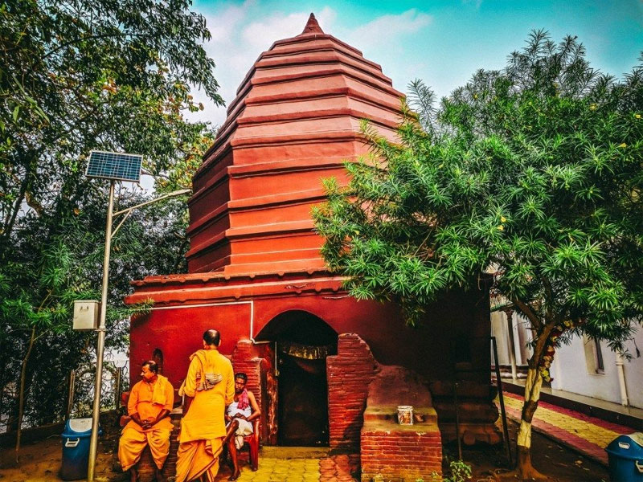
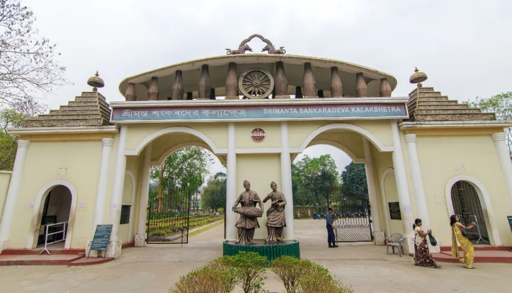
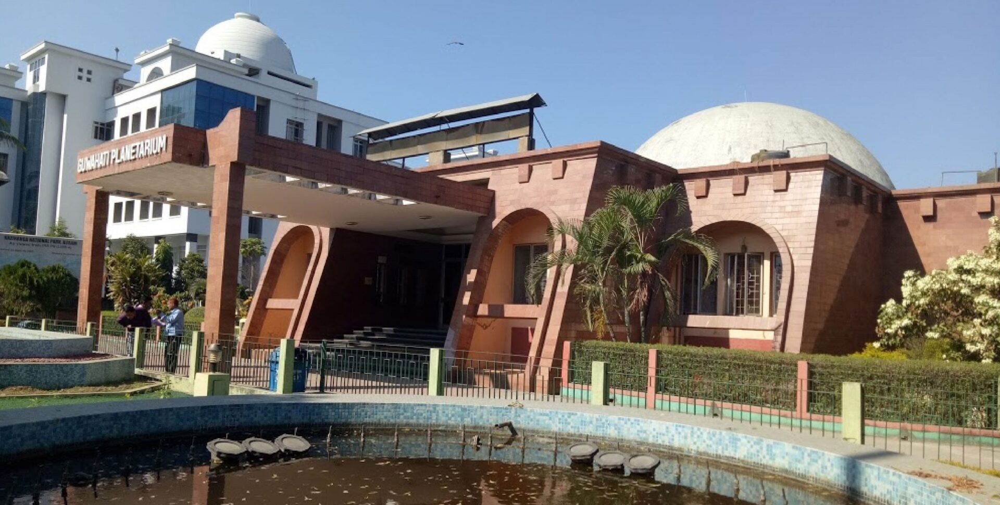

📍 Famous Places: The City of Temples
Exploring the main landmarks and scenic spots along the hills and river.
Major Landmarks and Scenic Spots

Kamakhya Temple
Perched atop the Nilachal Hill, this is the most famous landmark and one of the oldest of the 51 Shakti Pithas.

Umananda Temple
Located on Peacock Island, the smallest inhabited river island, dedicated to Lord Shiva.

Srimanta Sankaradeva Kalakshetra
A sprawling cultural complex showcasing the life and rich cultural heritage of Assam and the Northeast.

Guwahati Planetarium
A distinctive architectural structure hosting regular shows and seminars on astronomical phenomena.